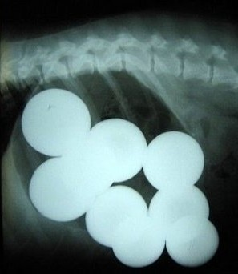
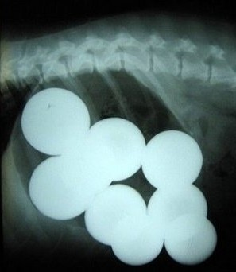
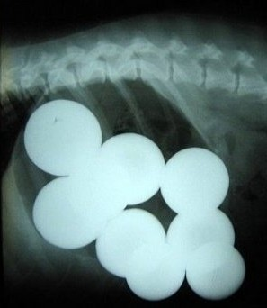

세상에 이런 일이!
위험천만! '위'대한 댕댕이가 반려인 몰래 삼킨 놀라운 것들한눈파는 사이 집어삼킬지 모르는 물건들은 미리 반려견의 눈앞에서 멀리 치워야 한다. 휴지, 치킨 뼈, 껌은 아무것도...
레드프라이데이

세상에 이런 일이!
위험천만! '위'대한 댕댕이가 반려인 몰래 삼킨 놀라운 것들한눈파는 사이 집어삼킬지 모르는 물건들은 미리 반려견의 눈앞에서 멀리 치워야 한다. 휴지, 치킨 뼈, 껌은 아무것도...
레드프라이데이

어디냥? 알려주개!
'반려인으로서 나는 몇 점일까?"동그람이
잔소라의 '숨은 냥이 찾기'
냥알못이던 그가 낙산공원 고양이의 '방석'된 사연동그람이

태수는 큰형님 by 도대체
스트릿 시정 냥이가 조명 앞을동그람이